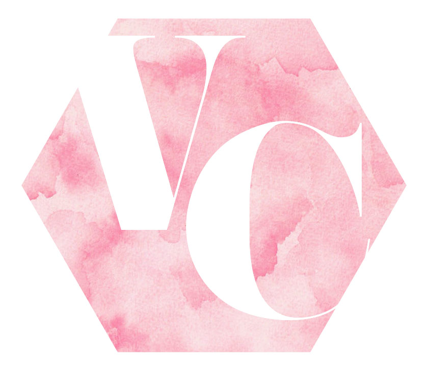

Vaunce & Cruise Cosmetics started life in Sta. Mesa, Manila. At first,
they made the cosmetics in their kitchen and sold them straight from the salon to fellow makeup artists,
as well as models and photographers. Soon, stylists and fashion editors got in on the action.
As the magazine credits racked up and word-of-mouth popularity grew,
the duo launched V&C in March 2017 from a counter in a Manila department store.
The store took the industry by storm, offering a wide range of products that
blended street savvy with glamorous style and panache. Behind the counter, the V&C approach
was notably different. Rather than driving sales through traditional promotional techniques, V&C relied on
the integrity of its carefully formulated product line. Adding to the image was a touch of outrageousness.
A company that honours individuality and self-expression above all else, it brought a
brilliant sense of drag and theatre into the sleek V&C stores and department store counters.
Venise Cruz was inspired to create Vaunce & Cruise Cosmetics after years
of experimenting with the best-of-the-best in beauty—and still seeing a void in the industry
for products that performed across all skin types and tones. She launched a makeup line
“so that women everywhere would be included,” focusing on a wide range of traditionally
hard-to-match skin tones, creating formulas that work for all skin types,
and pinpointing universal shades.
V&C products are designed to feel lightweight, even as they
deliver buildable coverage that effortlessly layers, to ultimately “make skin look like skin.”
Most importantly, Venise creates makeup to inspire: “Makeup is there for you to have fun with,” she says.
“It should never feel like pressure. It should never feel like a uniform. Feel free to take chances, and take risks,
and dare to do something new or different.”
© 2017 Venise Marielle E. Cruz
Disclaimer: This is for school purposes only. All products are from MAC Cosmetics